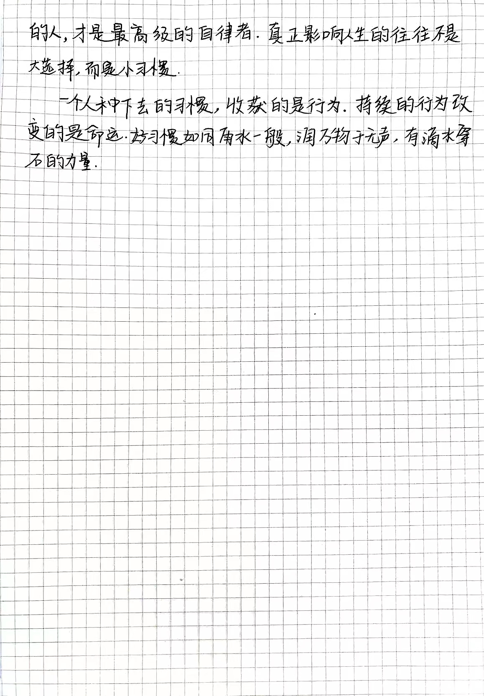
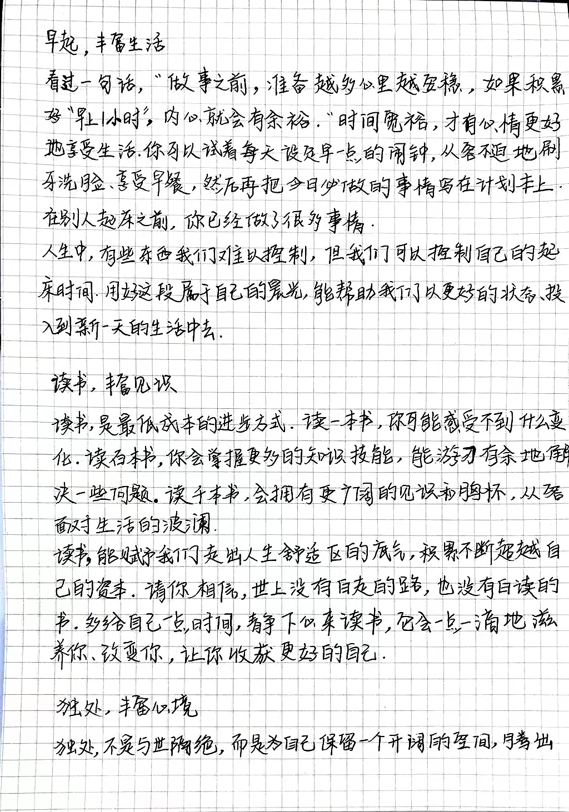
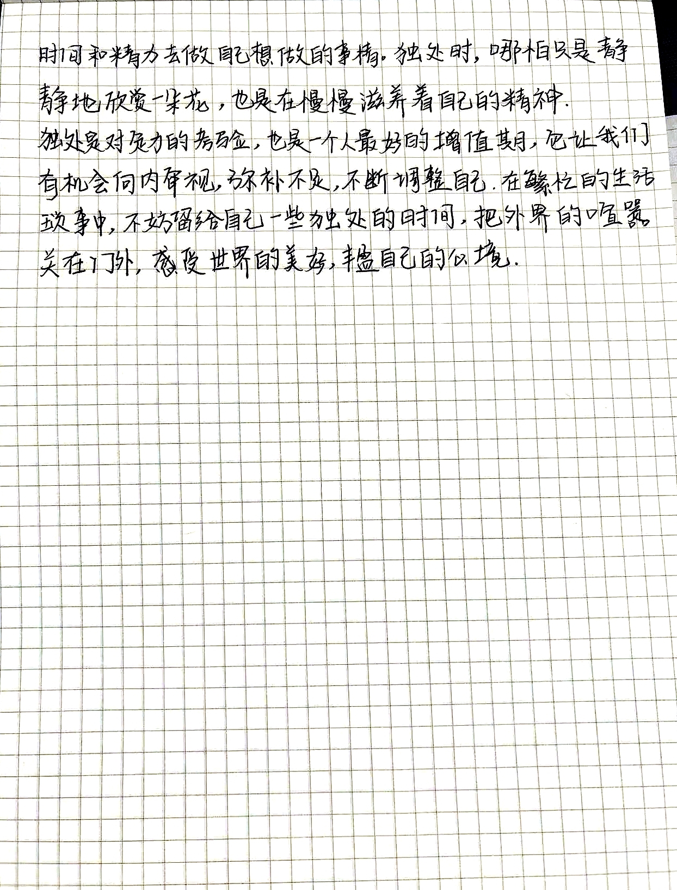

2023年05月19日
以下内容摘自人民日报，由赵同学书写，心情烦躁的时候或者生活不如意的时候可以看看👇





2023 年 04月 15 日
《世界不为谁而圆，但我们的心要为自己而圆》
由于圆给人温暖、亲切、舒适的感觉，比较容易让眼接受，所以应用也是很广泛的。它不仅具有对称性，而且也具有收缩性，能把人的视觉焦点聚在圆心，能够有效地吸引注意力，拉近人的距离感。
我们的人生就像是一个画圆的过程，圆心就像我们的梦想或目标，只有我们有了明确的目标，我们才会有生活的动力和方向。半径就像我们每个人的天赋各有不同。因此，所带来的影响力各不相同，我们只要尽力画好自己的圆，这个世界将会有序而不失魅力！
数学学累了，我们可以找自己喜欢的，大胆创作。最后分享一下我最近钩织的小挎包包和杯垫，因为是刚学习钩织圆，所以就开始大胆想象了，也大胆尝试毛线配色和钩织花型。
 |
 |
|---|
 |
 |
 |
|---|
2023 年 03 月 29 日
《泰勒展开式的人生启示》
如果将人的一生类比成函数，我们的人生并不是解析的，假如我们的人生是解析的，那么我们是可以通过短时间内发生的一切推断出整个人生的所有细节，在瞬间知道了人世间的种种酸甜苦辣，爱恨悲欢。但事实并非如此，事实上我们的人生总是充满各种意外。
即使身在低谷，也要好好吃饭，积蓄能量，才能够认真生活。要懂得，睡觉也是积蓄能量，身体好才是人这一辈子最宝贵的财富。爱好是生活的调料，能够让我们对枯燥无味的生活更感兴趣，比如看书写字。当你难过的时候，可以去运动，不仅可以强身健体，还能够减轻压力，比如说跑步和游泳，让你变得更加有活力。
2022 年 10 月 08 日
美文笔记分享（知足常乐）：安全感+踏实感=知足常乐
安全感
「很多人都会抱怨自己的生活、工作和学习处境，但是今天上完政治老师的课之后，突然发现之前跟家人抱怨自己现在的情况时，真的是不值得。老师跟我们讲她很开心能够站在教室给我们授课，因为她之所以能够站在教室里上课证明现在我们是安全的。」
「安全感是从自己身边的点点滴滴体会到的。我们要珍惜我们的国家为了每个人都能够健康平安的生活，已经付出了很多很多。我们要时常怀感恩的心，感谢我们亲爱的老师家人还有那可爱的祖国的无私奉献！」
踏实感
「每天问一问今天吃好运动好睡好了，那么今天学习了吗，收获了什么？当自己发现自己每天都在坚持，从不放弃，每天都会很踏实。」
「科研的道路中其实并不孤独，有室友的相伴，有家人的关心，有爱人的鼓励，还有自己有一颗努力上进的心，每天都脚踏实地去感受身边的事，你就会发现自己感觉蛮踏实滴！」
知足常乐
「我们要时刻保持一颗知足常乐的心，这样我们才会从生活中发现美。虽然我们无法改变这个现实，那么既来之，则安之，这里总会是你实现梦想的地方。一起欢呼吧！」